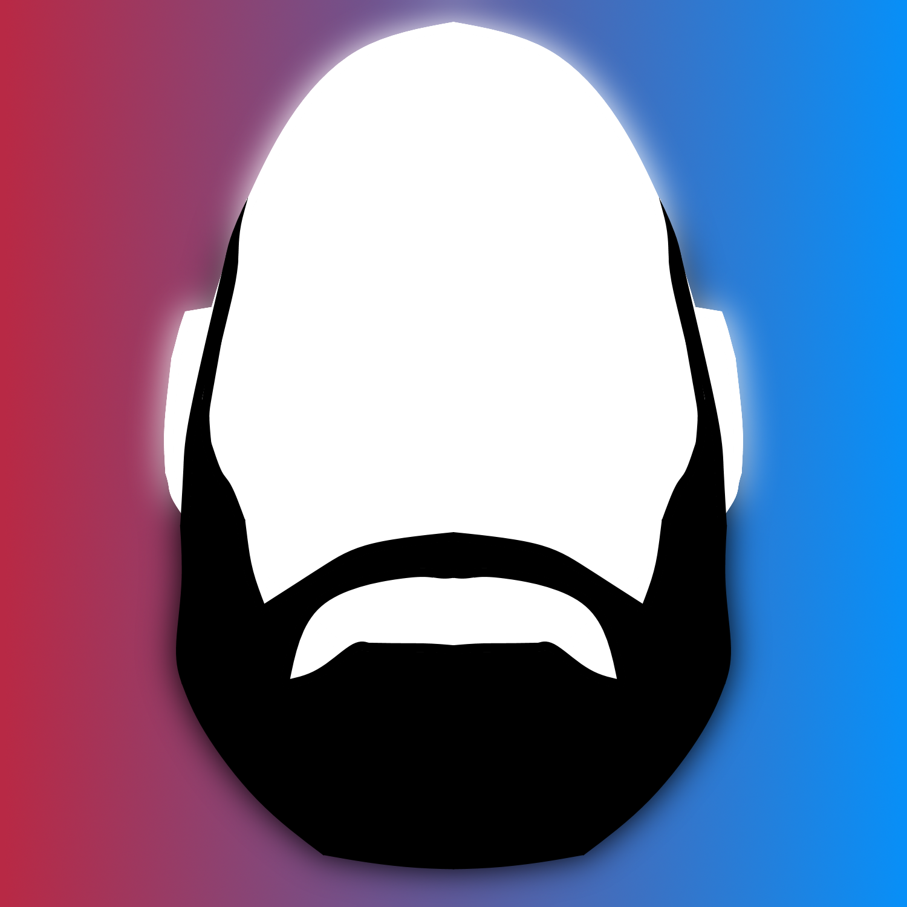

About the writer:
I'm from Eastern Australia, where I enjoy retro gaming. I may not have the biggest collection, but my passion for it is fairly strong. Retro gaming has intrigued me since I was a young child and one day I wish to have a good collection.

My favourite systems are the Super Nintendo Entertainment System (SNES), and the Sega Mega Drive (SMD). Nintendo and Sega have interested me the most, with the Xbox and Playstation also providing some intrigue for me as well. One day I wish to have these systems and much more.